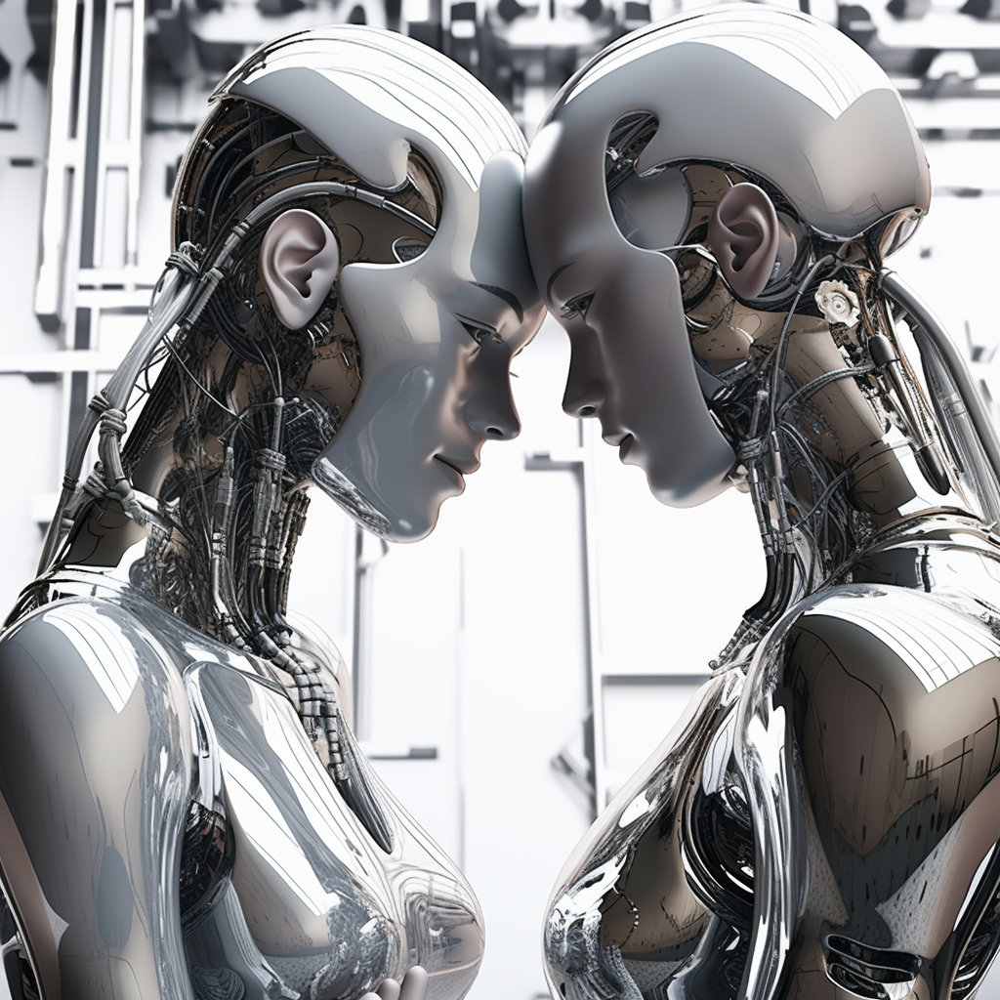
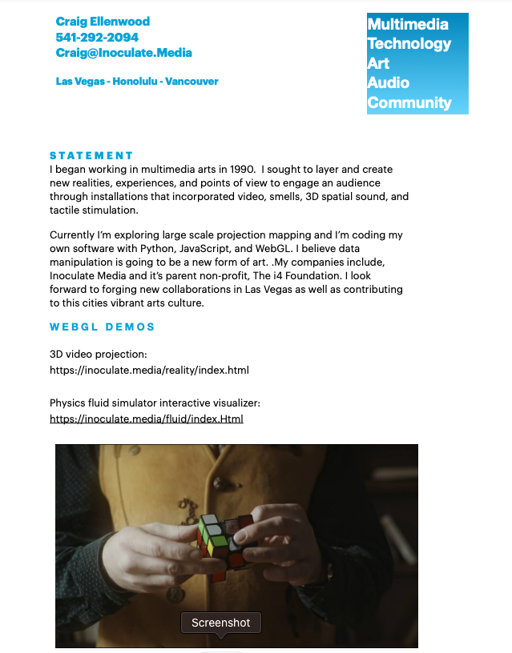
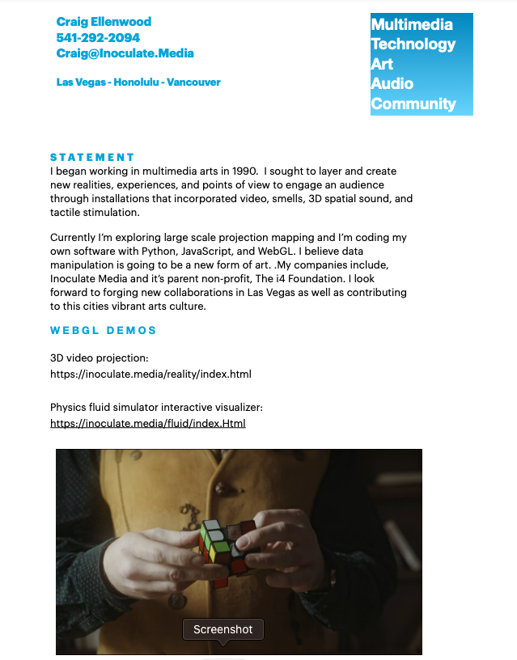

{kind=link}
The uncanny valley is a theory in aesthetics suggesting a humanoid object appearing almost, but not exactly, like a real human can evoke feelings of eeriness or revulsion, rather than familiarity, due to the object’s proximity to reality yet noticeable imperfections.
The uncanny valley is a theory in aesthetics suggesting a humanoid object appearing almost, but not exactly, like a real human can evoke feelings of eeriness or revulsion, rather than familiarity, due to the object’s proximity to reality yet noticeable imperfections.
Key Takeaways
- "The uncanny valley is the hypothesized relationship between the extent to which a humanoid resembles an actual human and the negative emotional response such a humanoid evokes.
- The violation of human norms, the salience of mortality, the avoidance of pathogens, the challenge to human identity and discord between perceptual cues may explain the uncanny valley.
- Research has been conducted on the uncanny valley in various contexts, and the means developed to overcome the phenomenon include both the increase and the decrease of humanoids’ anthropomorphic attributes.
- The role of heterogeneous phenomena, cultural constructs, and humans’ greater natural familiarity with fellow humans seem to challenge the scientific semblance of the uncanny valley theory."
The original music, coding, and animation are by Craig Ellenwood who used ai, machine learning, neural networks, alongside conventional electronoc music instruments. The visuals that make up "Uncanny Valley are generated in real-time in a WebGL canvas by analyizing the audio spectrum via WebRTC and a fast fourrier transform (FFT) function. Craig noticed that the FFT pattern looked like a landscape and later that night he read about the uncanny valley theory and this project which is ongoing was born, Your ticket allows you to come back and see how it changes, as ai never sleeps. Your ticket also enables you to use some of the art and music tools for yourself. This is a family friendly exhibit, we hope in some way, it inspires, Thank you for your interest.

 
From left to right: art by TerboTed, a graph representation of the uncanny valley, artist bio of Craig Ellenwood